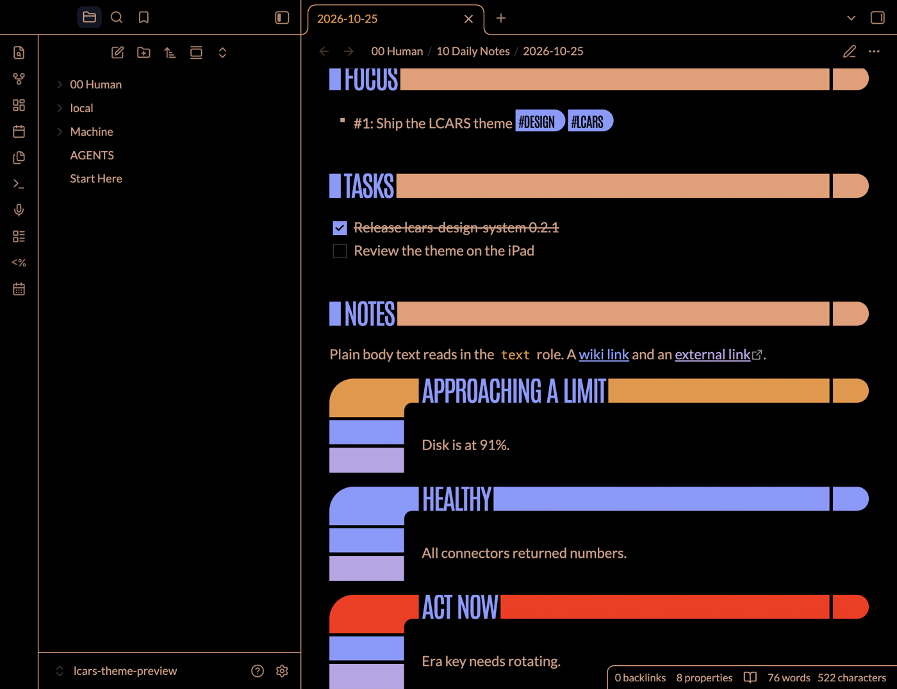
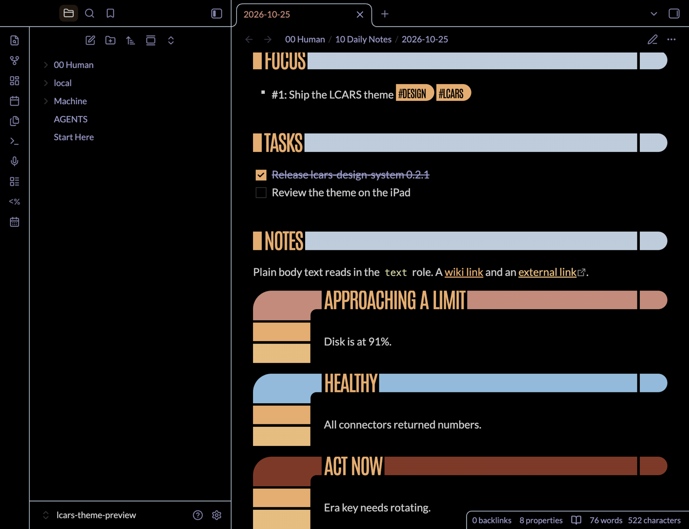
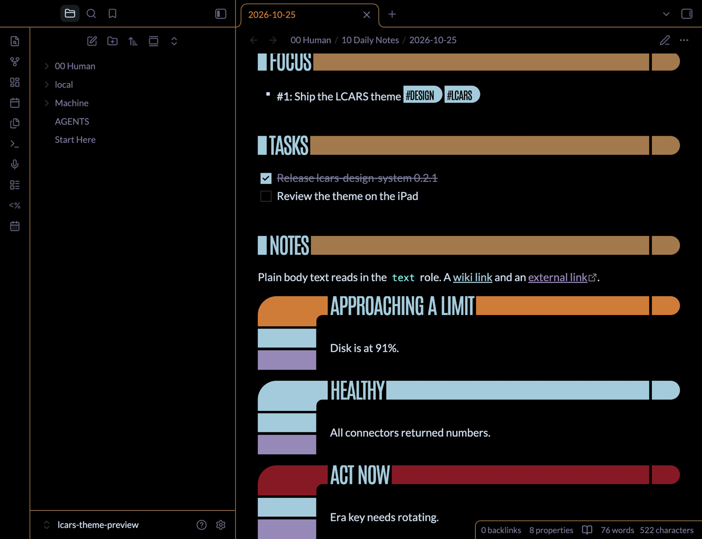
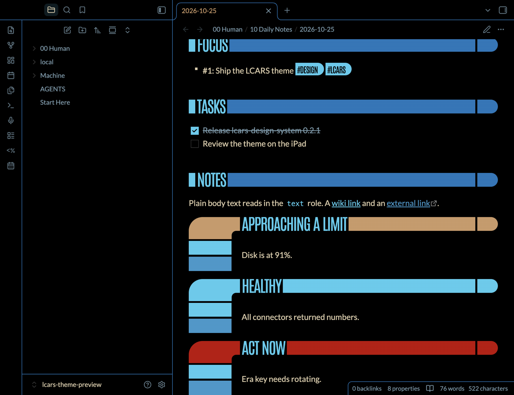
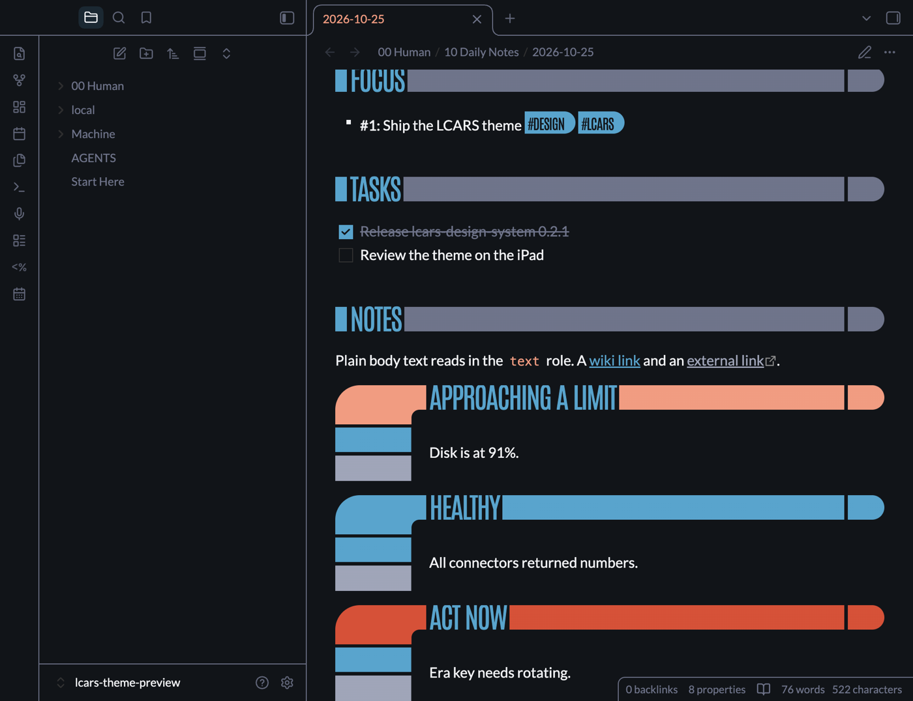

Overview01
LCARS Mainframe installs, upgrades and runs a Memory Alpha vault: an Obsidian folder that works as a backend, not a second brain.
You write in 00 Human/. Scripts and any AI tool work in Machine/, following the AGENTS.md in each folder. Your daily numbers are filled in by small programs called connectors, not typed by an AI.
Everything is plain Markdown and plain scripts. No AI is needed for the core: collecting numbers, scheduling, daily notes, dashboards and upgrades all run without one.





Install02
Needs Node 22 or later. Git is optional; with it, upgrades merge your edits automatically.
npm i -g github:JawsomeJason/lcars-mainframe
lcars init ~/Notes # shows every file it will add, then asksOpen ~/Notes in Obsidian, then run the onboarding workflow with your AI tool: Machine/Workflows/onboarding/.
Commands03
lcars init <dir> | Install a new vault. Prints every file it will add and asks first. |
|---|---|
lcars status | The installed version, the core files you changed, and connector health. |
lcars collect --dry-run | Read every tracked number and write nothing. |
lcars collect | Write today’s numbers into today’s daily note. |
lcars schedule install --at 07:00 --env-file ~/.env.lcars | Run collect every day at that time (launchd on macOS). |
lcars upgrade | Bring the vault up to the installed version of lcars, merging your edits. |
Connectors04
A connector is a folder in local/connectors/ with a connector.json and any program that prints numbers. Connectors are yours: they live in your vault, not in the core.
{
"description": "Open pull requests assigned to me.",
"properties": ["open_prs"],
"run": ["node", "open-prs.cjs"],
"env": ["GITHUB_TOKEN"],
"bin": []
}The program prints a JSON object ({"open_prs": 3}), key=value lines, or one bare number. A connector runs when its property is listed, empty, in the frontmatter of 00 Human/80 Templates/Daily.md.
A failure is written as unknown, never 0, and never overwrites a value already in the note. Each connector runs in its own process group with a timeout, and the daily note is written atomically.
See local/AGENTS.md in a vault for the full rules, and connectors/youtube/ for an example.
Customize05
Make it yours without forking:
- Rules. Put an
AGENTS.local.mdnext to anyAGENTS.md. Your file wins. - Workflows and connectors. Put them in
local/workflows/<name>/andlocal/connectors/<name>/. One with the same name as a core one replaces it. - Core files. Edit them if you want;
lcars upgrademerges your edit with the new version.
Theme06
New vaults use the LCARS theme, generated from the LCARS Design System tokens and built in its grammar: headings cut into bars, callouts framed by elbows and sidebars, properties as contact rows, and tags as pills.
Pick the era in Settings › Style Settings › LCARS: TNG, VOY, FC, NEM or PIC. Obsidian’s light and dark appearance switch the mode.
To change the theme, change the design system or theme/build.mjs, then run npm run build:theme. Never edit the generated CSS.
Upgrades07
lcars records what it installed in .lcars/ inside the vault: the version, and the exact content of every file it wrote. Keep that folder, and sync it with the rest of the vault.
On lcars upgrade, each file falls into one of three cases:
| You left it alone | It is replaced with the new version. |
|---|---|
| You changed it | Your edit and the new version are merged, three ways, against what was installed. |
| Both changed the same lines | Your file stays as it is, and the new version is written beside it as <file>.new for you to merge. |
Settings files such as .obsidian/*.json are seeds: installed once, then yours. The design notes are in docs/design.md.
Credits08
The vault layout, workflows and the Human and Machine split come from Eric Michaud’s EMAI (Easy Machine AI) Starter Vault, shown in his video Build an Obsidian BACKEND Not a Second Brain!
Source: github.com/JawsomeJason/lcars-mainframe.
LCARS was designed by Michael Okuda for Star Trek: The Next Generation and belongs to Paramount. This is a fan project, not affiliated with or endorsed by Paramount. Antonio and Lato are under the SIL Open Font License.